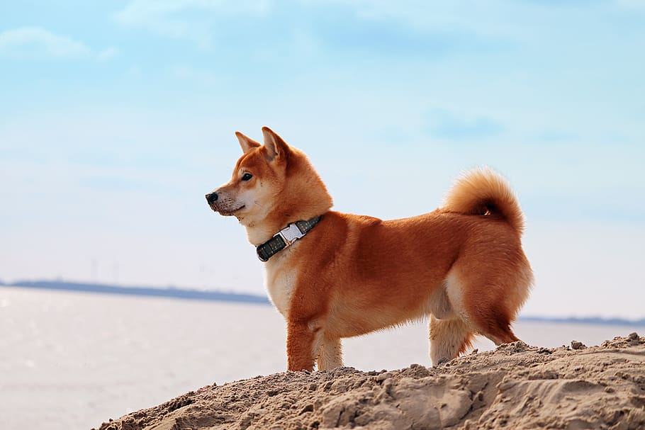

Daisy

When Daisy isn’t busy slaying all of the evil snakes trying to attack us (Pictured Above), you can usually find her annoying her older sister Marina, getting super hyper at completely random times, or relaxing in our backyard making sure she keeps out all of the intruders (squirrels)
One of Daisy’s favorite things to do is beg to go on a walk, and then once we’re about half way done with the walk she likes to lay down and refuse to keep going. She then loves being carried all the way back from said walk, and the process will repeat again later in the day.
Photo Gallery


Likes
- Shredded Cheese
- Walks around the neighborhood
- Peanut Butter Chex Cereal (specifically peanut butter kind)
Hazel

Hazel is a year-old yellow Labrador retriever that enjoys long walks and playing catch (in or out of the water). She has a lot of energy, so she gets restless if she does not have enough exercise. Hazel loves meeting new people and seeing old friends. She likes to jump on people, but she is friendly and does not mean any harm.
Hazel will eat anything and everything. Like most Labrador retrievers, she loves food and will eat things that are not actually edible. Some of the things that Hazel has chewed on include hand towels, blankets, Apple Airpods, and Halloween decorations. She also loves to eat human food such as lettuce.
Photo Gallery


Likes
- Hazel likes to swim and catch her stick in the water.
- Hazel likes to go on long walks.
- Hazel likes tough chewing toys.
Biscuit Dog
Biscuit is a 2 year old shiba inu dog. Shiba inus are energetic and playful dogs. Biscuit enjoys running outside in circles and then laying down in the grass in the sun for hours. He also likes going for occasional swims.
As energetic as Biscuit is, he also likes to relax. He loves to sleep in his dog bed and watch Netflix with his owners. His favorite treat are apples.
Photo Gallery


Likes
- Going for walks
- Swimming
- Apples
Bear

Bear is a lazy, food-loving dog that is sometimes playful. His favorite activity is lying in the sun on his side and lounging. He enjoys playing with his toys and loves to fetch them when you throw them, but eventually, he gets bored and just stops fetching them and lays down.
Bear is also scared of a lot of things. He doesn’t like water (showers and even rain) or getting his nails clipped, and he’s sometimes even so lazy that he’ll just stop walking and sit down until you turn around and go back home.
Photo Gallery


Likes
- Food
- Laying in Bed
- Fetch
Jax

Jax is a kitten, about five months old that I found this summer at a gas station while traveling to Marquette, Michigan. He was scared and malnourished, crying in the parking lot. I took him with me and after some healthy meals and a trip to the vet he is doing great!
My roommates and I just recently moved and Jax has been having a hard time getting used to the large house since we were previously living in a small apartment. Jax is incredibly playful and loves to run around, but when he is sleepy he is happy to be held.
Photo Gallery


Likes
Cheeto (Chicken)

Cheeto is a cat who likes to eat a lot and play a lot. He has an obsession with his grandpa (human) and tries to get outside every single day. If he isn’t causing problems, he is usually hiding in a seven foot tall cat tree and sleeping.
Another name for Cheeto is Chicken, because sometimes he sits very scrunched up and ends up looking like a rotisserie chicken. He was nicknamed this by one of his friends, and now he understands it as his own name. He is about six years old and still acts like a younger cat, despite being middle-aged.
Photo Gallery